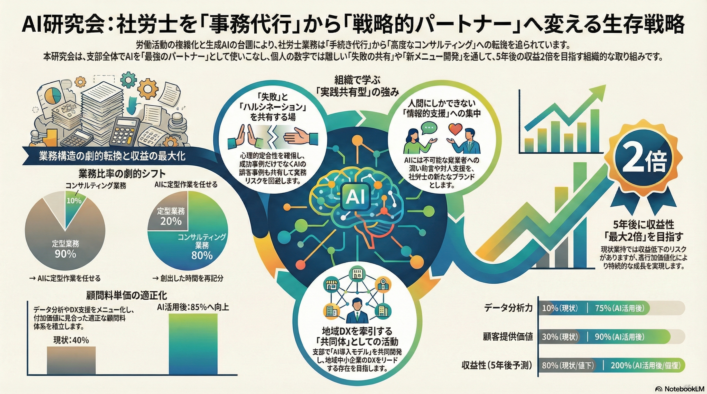

生成AI技術を社労士業務の強力なパートナーとして再定義し、
会員の競争力強化と地域中小企業のDX推進に貢献する
「AI研究会」の設置を提案します。

単なるツールの操作習得ではなく、実益に直結する3つの柱
書類作成補助・法規リサーチ等の効率化により、 高付加価値業務への時間を創出します。 AIを「使える」会員の底上げが第一の目標です。
定型業務 90% → 30% へ人事データ分析・採用支援等、顧問先へ還元できる 新たなナレッジを蓄積・共同開発します。 AIは新たなメニュー開発の武器になります。
顧客提供価値 30% → 90% へAI導入支援や高度コンサルティングをメニュー化し、 顧問料の適正な引き上げに繋げます。 「選ばれる社労士」としてのブランドを確立します。
顧問料単価 40% → 85% へ
「教わる」場ではなく、実務を持ち寄り支部全体で
知見を循環させる「実践共有型」の運営
月1回・任意参加。成功事例だけでなく AIの誤答・失敗談も共有。 売り込み禁止、心理的安全性を確保。
顧問先企業のバックオフィスへの AI導入モデルを会員で共同開発。 再現性ある「型」を蓄積する。
得られたナレッジを各会員が持ち帰り 顧問先へ提供。地域企業のDXを 牽引し信頼を構築する。
グラフを切り替えることで、AI活用前後の 業務比重の変化を視覚的に確認できます。 コンサルティング・データ分析・顧客価値が 劇的に向上します。
AI研究会への参加有無で、5年後の収益性は 大きく分岐します。今行動することが、 「選ばれる社労士」への最短ルートです。
| 時点 | 現状維持 | AI研究会参加 |
|---|---|---|
| 現在 | 100% | 100% |
| 1年後 | 100% | 110% |
| 2年後 | 95% | 125% |
| 3年後 | 90% | 145% |
| 4年後 | 85% | 170% |
| 5年後 | 80% | 200% |
※上記数値はイメージです。個々の状況により異なります。
単なる手続き代行を超え、地域中小企業のDXを実務面から牽引する「導入モデル」の構築・支援。
従来は困難だった詳細な人事データ分析をAIで実施。勘に頼らない、データに基づく組織課題の解決。
高精度のマッチング支援や、企業の成長戦略に合致した規則の策定。
AIが創出した時間で、経営者の感情に寄り添う「対人支援」と「戦略パートナー」としての活動。
「成果自慢」は禁止。「困りごと」と「失敗」こそを歓迎します。
売り込みやマウンティングは禁止。専門家同士が対等に学べる場を守ります。
AIの誤答（ハルシネーション）や、うまくいかなかった事例を積極的に共有する。
専門家としてのプライドを一旦置き、共に学ぶ姿勢を持つ。「分からない」と言える環境。
設置承認・運営規則の決定・会員への告知と募集開始
キックオフ（第1回実践共有会）
テーマ：心理的安全性の醸成と現状の課題共有
ケーススタディの蓄積・ガイドライン（プライバシー・セキュリティ）の策定
最初の「顧問先導入モデル（β版）」の完成と共有
本提案は、会員の皆様の発展と地域企業の成長を支えるための重要な一歩です。
寺山支部長をはじめ、執行部の先生方におかれましては、
ぜひ前向きなご検討をお願い申し上げます。
宛先：支部長 寺山 様 ／ 熊谷支部執行部 先生方一同
提案者：新井 健司